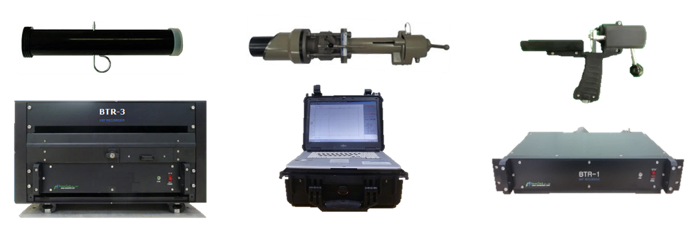

The BathyThermograph System(BTS) is a system for obtaining records for each depth temperature and sound velocity by the probe of BTP(XBT) falling in water. BTS consists of expendable probe to measure underwater temperature, launcher shooting probe and recorder as data acquisition, recording, and processing.
BTR(Recorder)
- Operating Depth: Max 1,830m
- Operating Speed: Max 30 Knots (Using BTP-4)
- Vertical Resolution: 64cm
- Temperature Accuracy: ±0.15℃
- Temperature Range: -2.2℃ ~ 35.6℃
BTP(Probe)
| Application | Max. Depth | Rated Speed | Remarks |
|---|---|---|---|
| BTP-4 | 460m | 30 Knots | |
| BTP-6 | 460m | 20 Knots | |
| BTP-7 | 760m | 15 Knots | |
| BTP-10 | 200m | 10 Knots |
